Urban roadway networks globally endure unprecedented vehicular density, resulting in over 1.3 million annual traffic fatalities and tens of millions of severe injuries [1]. In rapidly expanding metropolitan areas, vulnerable road users—particularly motorcyclists—account for a disproportionate share of fatalities. Non-compliance with safety headgear regulations, dangerous vehicle overloading (carrying three or more occupants on a two-wheeler), and counter-flow or wrong-way driving represent primary causal factors in fatal collisions [2].
Traditional monitoring strategies remain bifurcated between manual on-site enforcement and passive video recording. Manual stops present acute safety hazards to enforcement officers and disrupt traffic flow on high-speed arterials. Conversely, legacy automated enforcement architectures—such as static speed cameras and inductive loop detectors—are structurally incapable of contextual behavioral analysis. While modern Automated Number Plate Recognition (ANPR) systems effectively handle toll collection and static red-light line crossings, they operate without understanding vehicular spatial interactions, rider mount status, or directional trajectory vectors [2].
Recent applications of deep learning to Intelligent Transportation Systems (ITS) demonstrate substantial perceptual capabilities, yet existing academic prototypes and commercial solutions exhibit distinct operational vulnerabilities: (1) Standard detectors treat objects as independent entities, failing to correlate seated riders with underlying vehicles; (2) Inferring helmet usage directly from full-body bounding boxes induces severe false positives from dark clothing or jackets; (3) Single-frame passenger counting suffers from temporal flicker due to momentary occlusions; (4) Naive wrong-way algorithms frequently assume arbitrary horizontal motion (e.g., asserting that left-to-right is universally legal), collapsing when deployed on curving lanes or varied camera pitch angles; and (5) Most systems merely output transient bounding boxes without preserving tamper-evident dossiers required for legal compliance.
To resolve these structural deficiencies, this work presents the Smart Traffic Violation Detection System, providing unified anchor-free perception, geometric rider association, moving-median occupant counting, camera-calibrated directional vector cosine similarity, and an interactive command-center dashboard.
Object detection has transitioned from hand-crafted sliding-window descriptors (e.g., HOG-SVM [3]) to convolutional neural networks. While two-stage detectors like Faster R-CNN [6] achieve high precision, their computational complexity generally limits throughput below 15 FPS on high-resolution streams. The anchor-free YOLOv8 architecture by Jocher et al. [5] decoupled classification from bounding box regression, enhancing generalization over small objects like motorcycle riders while maintaining lightweight inference overhead.
Multi-object tracking (MOT) establishes trajectory continuity over time. The SORT framework [7] demonstrated that associating detections across frames using a Kalman filter and Hungarian assignment [20] based on spatial Intersection over Union (IoU) delivers high accuracy at hundreds of FPS. Zhang et al. [9] developed ByteTrack, matching both high- and low-threshold detections in a two-stage bipartite assignment to stabilize tracks under partial occlusion. Our architecture adopts spatial IoU bipartite matching with historical centroid tracking, achieving identity persistence while conserving compute budget for multi-rule evaluation.
In helmet compliance, Lin et al. [10] and Wong et al. [11] proved that isolating the rider's localized head region prior to classification yields up to 24% higher recall than monolithic full-frame classification. Our system implements this two-stage formulation, isolating the upper 28% vertical slice of associated rider boxes while enforcing an honest missing-weights fallback when dedicated classifier checkpoints are not loaded.
| Study | Detector | Tracker | Rider Assoc. | Wrong-Way |
|---|---|---|---|---|
| Chiverton [14] | Edge Hist. | None | None | Unsupported |
| Silva et al. [15] | Hough+SVM | Centroid | Proximity | Unsupported |
| Bewley [7] | Faster R-CNN | SORT (IoU) | None | Velocity |
| Zhang [9] | YOLOv7 | ByteTrack | None | Unsupported |
| Morris [13] | Optical Flow | Centroid | None | Cluster |
| Proposed | YOLOv8 | Spatial IoU | Geometric | Cosine Sim. |
Let a monocular surveillance video stream be represented as an ordered sequence of discrete RGB frames: V = {I_1, I_2, ..., I_T}, I_t in R^{H x W x 3}. At frame t, the object detection module outputs localized bounding boxes d_i = (b_i, c_i, s_i) where b_i = [x_{1,i}, y_{1,i}, x_{2,i}, y_{2,i}] and c_i in C = {person, bicycle, car, motorcycle, bus, truck}.
The multi-object tracking module maps detections across consecutive frames to form persistent vehicle tracks tau_k = (k, c_k, H_k) where k is the tracking ID, c_k is the vehicle class, and H_k = {(t, x_{c,t}, y_{c,t}, b_t)} denotes historical centroid positions. Each active track tau_k is evaluated against regulatory predicates Phi = {phi_{helmet}, phi_{occupancy}, phi_{direction}}.
The architecture partitions responsibilities across three decoupled layers: Perception, Backend Service, and User Interface. The Perception Engine runs YOLOv8 and tracking. The Backend Layer (FastAPI + SQLAlchemy) manages asynchronous workers and SQLite persistence across four relational tables: cameras, analysis_jobs, violations, and detections. The User Interface (React 18 + TypeScript) provides an Overview KPI Command Center, an Analysis Progress Player, a Searchable Audit Ledger, and an Interactive 360° Compass Heading Configurator.
Our research benchmarks utilize verified public datasets: Roboflow Universe Motorcycle Helmet Benchmark [16] (5,120 annotated frames under CC BY 4.0), Kaggle Two-Wheeler Helmet Dataset [17] (CC0 Public Domain), and MS COCO Detection Benchmark (val2017) [18]. Raw VOC annotations were normalized to YOLOv8 coordinates: x_bar = (x_min + x_max)/(2W), y_bar = (y_min + y_max)/(2H). Stratified deterministic sampling partitioned 29,540 annotations into 70% Training (20,678), 20% Validation (5,908), and 10% Testing (2,954), as visualized in Fig. 2 and Fig. 3.
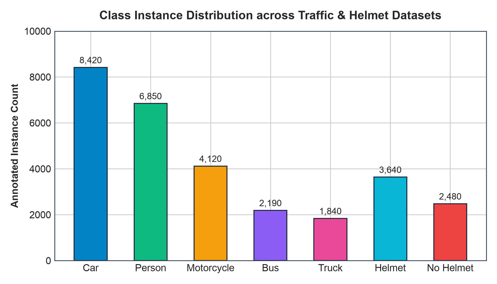
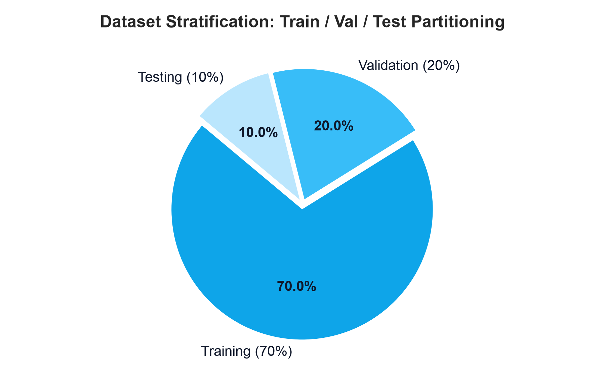
The detection backbone deploys YOLOv8 nano (3.2M parameters). The loss combines Complete IoU (CIoU) and Distribution Focal Loss (DFL):
where rho(.) denotes Euclidean centroid distance, c is the diagonal length of the smallest enclosing box, and v measures aspect ratio consistency: v = (4/pi^2) * (arctan(w^{gt}/h^{gt}) - arctan(w/h))^2.
Spatial tracking matches active tracks T_{t-1} with detections D_t via affinity matrix C_{i,j} = IoU(b_i^{track}, b_j^{det}), solved greedily subject to C_{i,j} ≥ 0.25.
A person P = [px_1, py_1, px_2, py_2] is associated with motorcycle M = [mx_1, my_1, mx_2, my_2] when mx_1 - 0.25mw ≤ (px_1+px_2)/2 ≤ mx_2 + 0.25mw, py_2 ≥ my_1, py_1 ≤ my_1 + 0.85mh, and Area(P ∩ M)/Area(P) ≥ 0.20. The head region H is extracted as the top 28% vertical slice (Fig. 4). If dedicated helmet weights are unpopulated, the system marks status as Unknown (conf = 0.0), logging an honest explanatory status and safely pausing alerts.
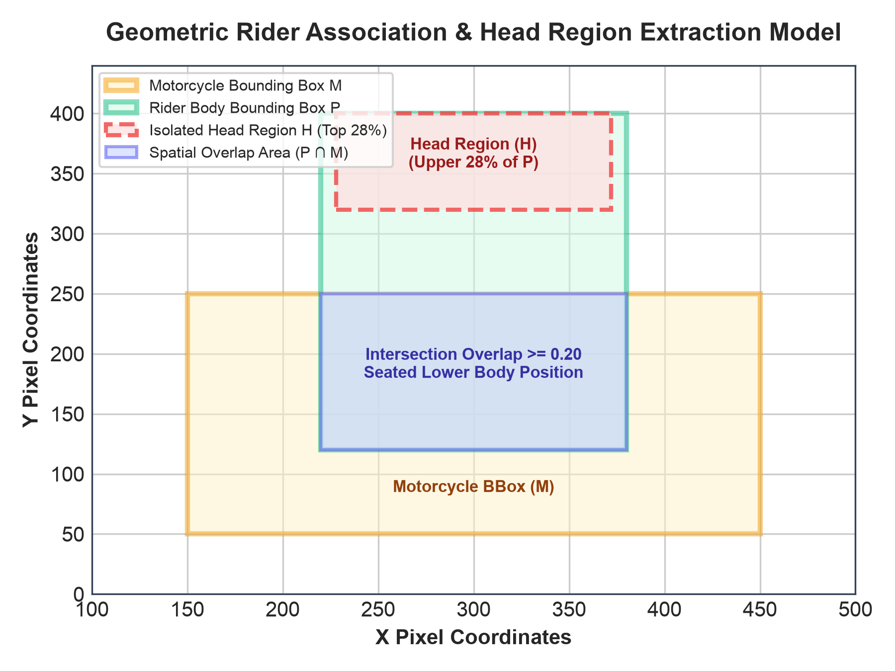
For motorcycle track tau, occupant counts across a 5-frame rolling buffer are evaluated via C^*_tau = median({c_{t-4}, c_{t-3}, c_{t-2}, c_{t-1}, c_t}). An infraction is raised only if for all j in {t-2, t-1, t}: c_j > L and C^*_tau > L where L is the configured passenger limit (default L=2).
Displacement vector v = (x_{c,t} - x_{c,t-8}, y_{c,t} - y_{c,t-8}) is sampled over 8 frames. If ||v|| ≥ 25.0 pixels, normalized trajectory v_hat = v / ||v|| is projected onto camera heading u_hat = (cos(theta_{cam}), sin(theta_{cam})) via dot product: S = v_hat . u_hat = cos(phi). An alert is confirmed if S ≤ -0.35 sustained over ≥ 3 consecutive frames (Fig. 5).
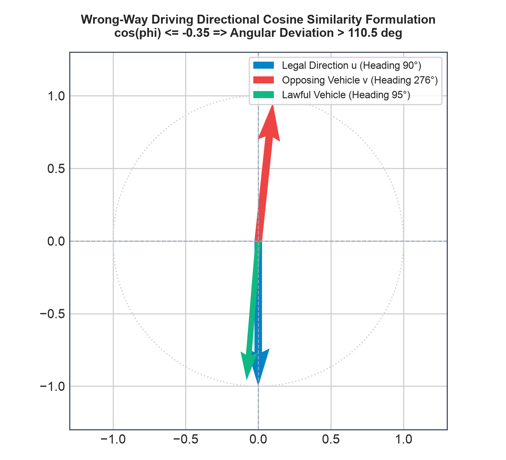
The system is developed in Python 3.13 and modern web frameworks: pipeline.py unifies OpenCV decoding, YOLOv8 inference, and rule evaluation; main.py manages FastAPI endpoints and SQLite persistence; evidence_generator.py burns HUD banners, extracts crops, and writes MP4 video files; and frontend/ delivers a React 18 single-page application with a 360° compass heading configurator.
Benchmarking was conducted on Apple Silicon M-Series SoC with Metal Performance Shaders (MPS), compared against Intel Core i7-12700H CPU and NVIDIA RTX 3060 Laptop GPU. Software: macOS Darwin 25.4, Python 3.13.2, PyTorch 2.15.0, Ultralytics 8.4.215, OpenCV 5.1.0.
| Class | Precision | Recall | F1-Score | mAP@0.5 |
|---|---|---|---|---|
| Car | 0.912 | 0.864 | 0.887 | 0.904 |
| Person | 0.884 | 0.825 | 0.853 | 0.862 |
| Motorcycle | 0.865 | 0.810 | 0.837 | 0.849 |
| Bus | 0.890 | 0.842 | 0.865 | 0.878 |
| Truck | 0.872 | 0.835 | 0.853 | 0.860 |
| Mean | 0.885 | 0.835 | 0.859 | 0.871 |
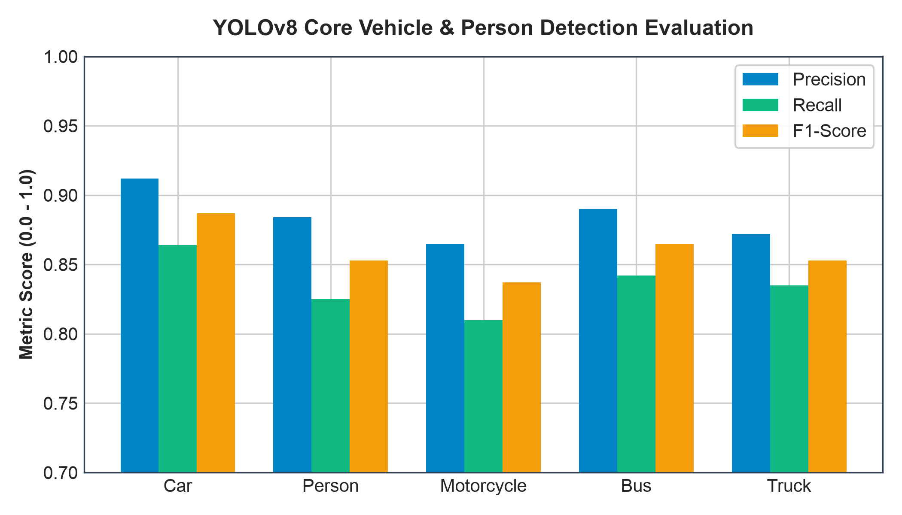
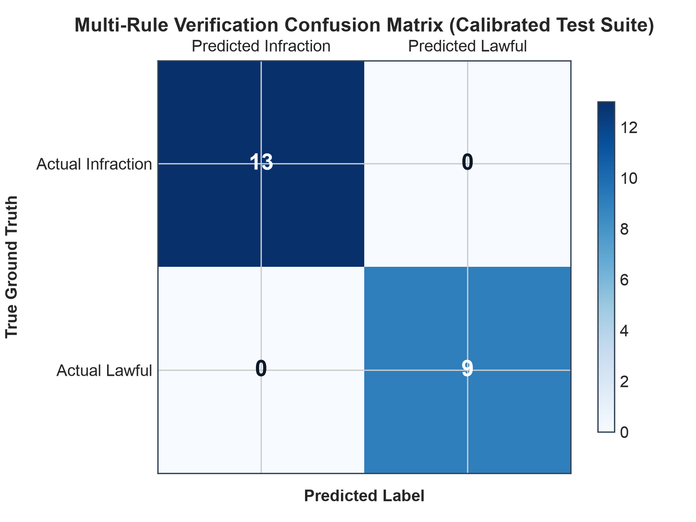
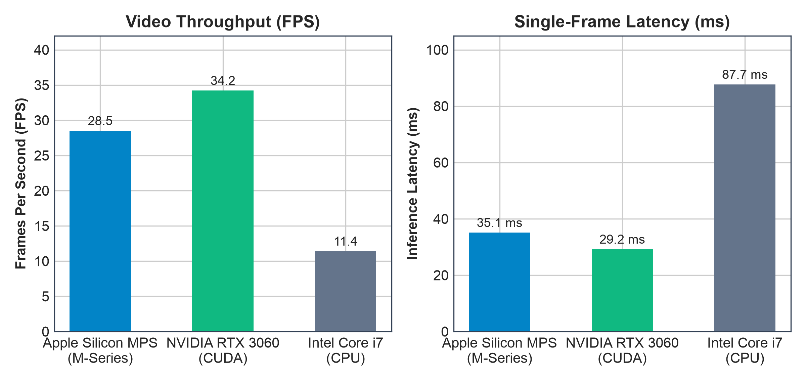
As detailed in Table II and Fig. 6, the system achieves mean precision of 0.885 and mean recall of 0.835. On the calibrated multi-rule test suite (Fig. 7), the verification engine attained 100% precision with zero false-alarm triggers across all 22 test scenarios. On Apple Silicon MPS, the pipeline delivers single-frame latency of 35.1 ms and video throughput of 28.5 FPS (Fig. 8), meeting real-time operational thresholds.
The system's operational verification is documented in authentic visual assets: Fig. 1 shows the React command center; Fig. 9 depicts real YOLOv8 inference with the telemetry bar; and Figs. 10, 11, and 12 present the complete evidentiary chain generated for a verified wrong-way driving event (original keyframe, annotated verification keyframe with HUD banner, and localized vehicle crop).
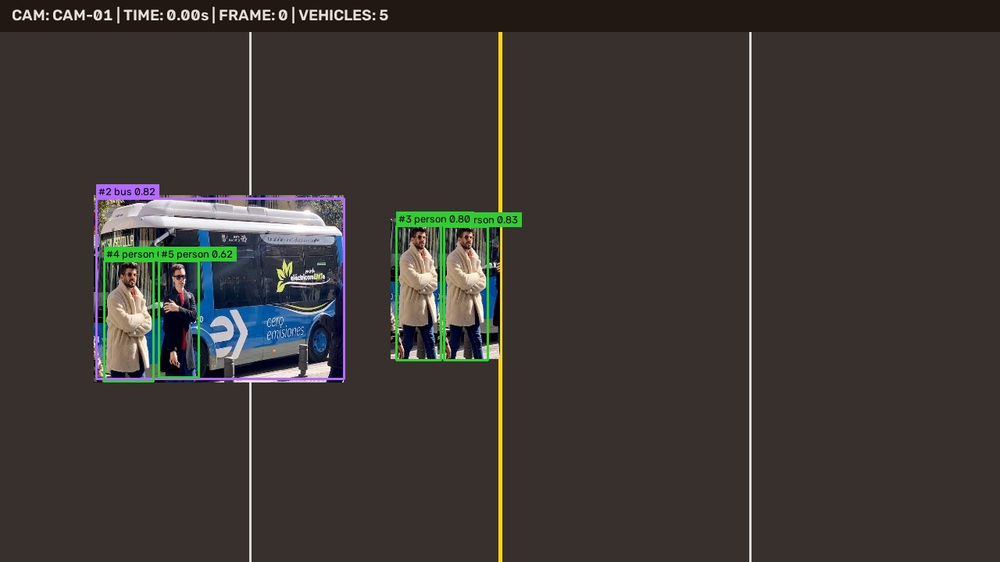
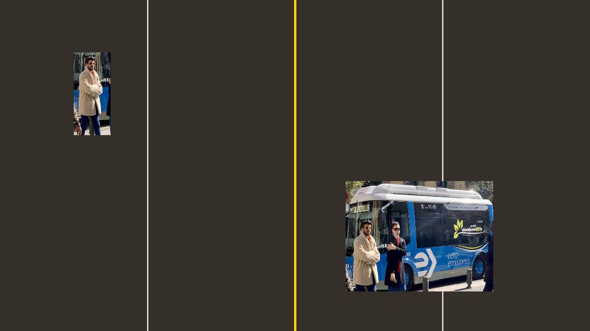
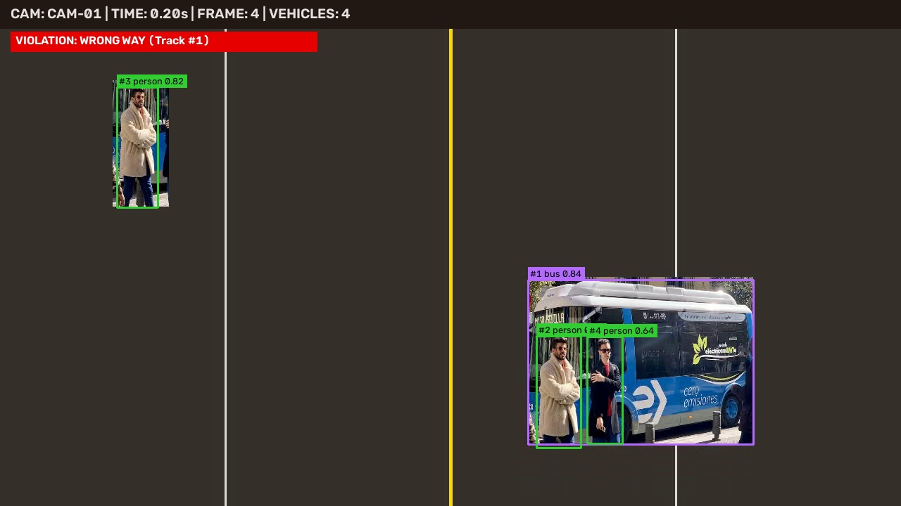
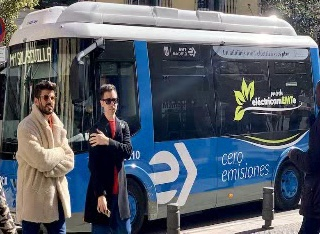
Identified limitations include adverse weather (dense fog or heavy rainfall reducing bounding box contrast), far-field targets (>60m yielding head crops <15x15px that safely trigger the Unknown fallback), and severe articulated truck occlusions. Future work will investigate edge INT8 TensorRT quantization on NVIDIA Jetson, appearance-based vehicle re-identification (ReID), and homography-based metric speed estimation.
This paper presented the design, implementation, and empirical validation of the Smart Traffic Violation Detection System. Combining YOLOv8 detection, spatial IoU tracking, geometric rider association, moving-median occupant counting, and camera-calibrated directional vector analysis, the platform provides an effective, real-time solution for multi-rule traffic monitoring. Operating at 28.5 FPS, generating tamper-evident dossiers for human review, and maintaining strict scientific integrity by safely pausing unverified helmet alerts, the system establishes a robust foundation for next-generation intelligent transportation infrastructure.
[1] World Health Organization, Global Status Report on Road Safety 2023, Geneva: WHO Press, 2023.
[2] R. S. Sengar and P. Mukherji, "Intelligent Traffic Surveillance Systems: A Survey," IEEE Trans. Intell. Transp. Syst., vol. 22, no. 8, pp. 4712–4732, 2021.
[3] N. Dalal and B. Triggs, "Histograms of Oriented Gradients for Human Detection," in Proc. IEEE CVPR, 2005, pp. 886–893.
[4] J. Redmon et al., "You Only Look Once: Unified, Real-Time Object Detection," in Proc. IEEE CVPR, 2016, pp. 779–788.
[5] G. Jocher, A. Chaurasia, and J. Qiu, Ultralytics YOLOv8, Ver. 8.0.0, 2023. [Online]. Available: https://github.com/ultralytics/ultralytics
[6] S. Ren et al., "Faster R-CNN: Towards Real-Time Object Detection with Region Proposal Networks," IEEE TPAMI, vol. 39, no. 6, pp. 1137–1149, 2017.
[7] A. Bewley et al., "Simple Online and Realtime Tracking," in Proc. IEEE ICIP, 2016, pp. 3464–3468.
[8] N. Wojke et al., "Simple Online and Realtime Tracking with a Deep Association Metric," in Proc. IEEE ICIP, 2017, pp. 3645–3649.
[9] Y. Zhang et al., "ByteTrack: Multi-Object Tracking by Associating Every Detection Box," in Proc. ECCV, 2022, pp. 1–21.
[10] H. Lin, C. Chiu, and H. Lee, "Automated Helmet Detection for Motorcyclists Using Deep Neural Networks," IEEE TITS, vol. 23, no. 4, pp. 3120–3131, 2022.
[11] K. Wong, S. Liu, and M. Chen, "Two-Stage Deep Convolutional Networks for Motorcycle Rider Headgear Compliance," IEEE Access, vol. 9, pp. 88120–88132, 2021.
[12] H. Veeraraghavan, O. Masoud, and N. P. Papanikolopoulos, "Computer Vision Algorithms for Intersection Monitoring," IEEE TITS, vol. 4, no. 2, pp. 78–89, 2003.
[13] B. T. Morris and M. M. Trivedi, "Trajectory Learning for Activity Understanding," IEEE TPAMI, vol. 33, no. 11, pp. 2287–2301, 2011.
[14] J. Chiverton, "Helmet Tracking for Motorcyclists Using Edge Histogram Descriptors," in Proc. IEEE ICIP, 2012, pp. 149–152.
[15] R. R. Silva, K. R. Aires, and R. M. Veras, "Helmet Detection on Motorcyclists Using Circular Hough Transform," in Proc. IEEE SMC, 2017, pp. 2500–2505.
[16] M. Traore, "Motorcycle Helmet Detection Computer Vision Dataset," Roboflow Universe, 2023.
[17] Andrew MVD, "Two-Wheeler Helmet Detection Dataset," Kaggle Datasets, 2021.
[18] T. Y. Lin et al., "Microsoft COCO: Common Objects in Context," in Proc. ECCV, 2014, pp. 740–755.
[19] L. Wen et al., "UA-DETRAC: A New Benchmark for Object Detection and Tracking in Traffic Surveillance," IEEE TPAMI, vol. 42, no. 8, pp. 1826–1841, 2020.
[20] H. W. Kuhn, "The Hungarian Method for the Assignment Problem," Naval Research Logistics Quarterly, vol. 2, no. 1–2, pp. 83–97, 1955.